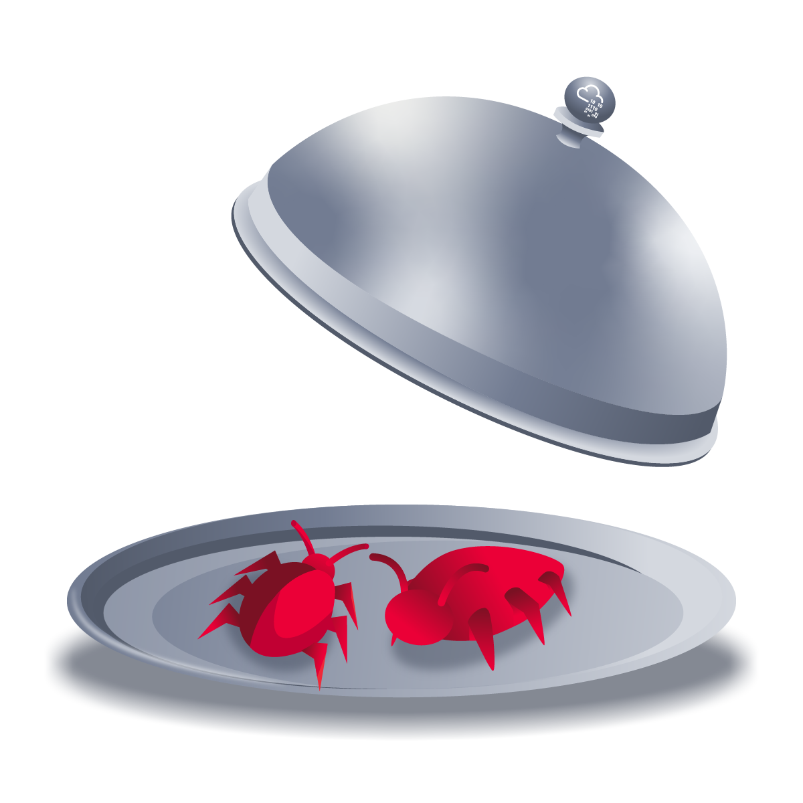
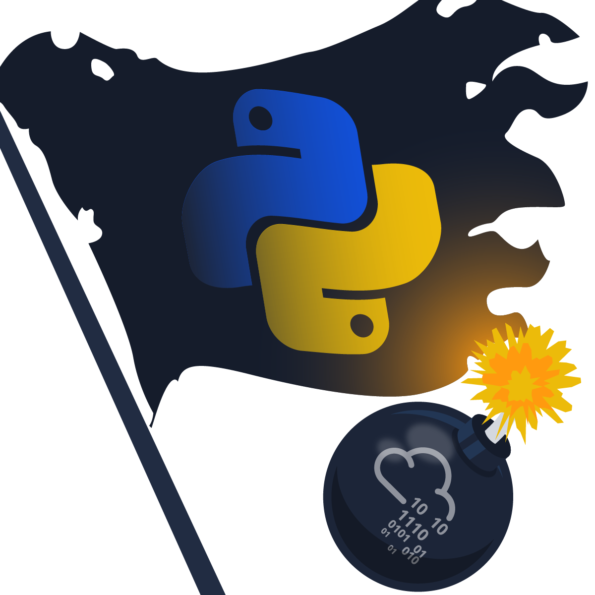

>_ CTF WRITEUPS
He resuelto múltiples desafíos en TryHackMe y plataformas similares. Aquí detallo el análisis, la explotación de vulnerabilidades (CVEs) y la escalada de privilegios.
Cat Pictures
Port knocking, reverse shells y escalada de privilegios en entorno Linux.

Silver Platter
Análisis y desarrollo completo del reto Silver Platter.

PyRat
Análisis forense y explotación en el reto PyRat.
B3dr0ck
Desarrollo y resolución del reto de B3dr0ck.

WordPress Exploitation
Explotando la vulnerabilidad crítica CVE-2021-29447 paso a paso.
SimpleHelp Exploit
Explotando CVE-2024-57727 en infraestructura SimpleHelp.